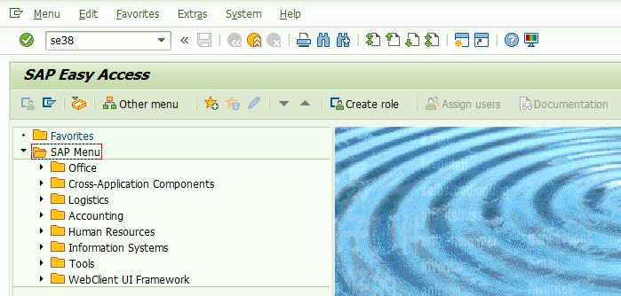
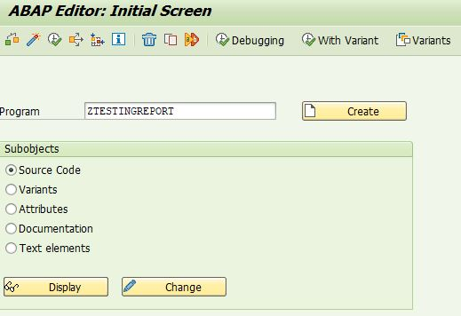
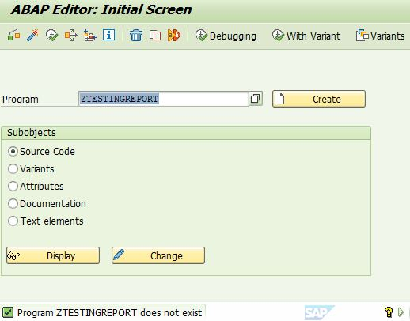
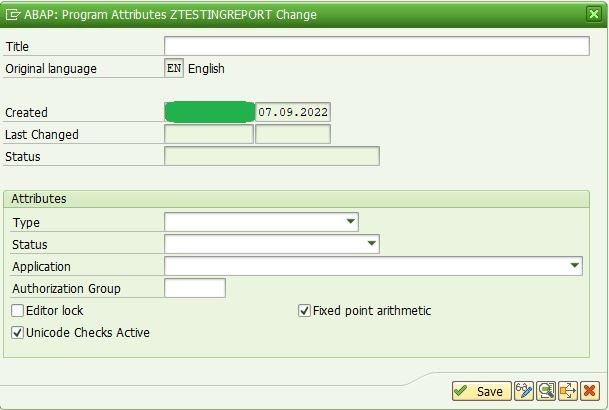

Navigate to ABAP Editor: Initial Screen by entering SE38 in the command field.

Enter the new Program Name (for the report) in the program text box

Koder are advised to perform a check to ensure that the name has not been used by hitting the display button after koder has entered the program name.
A message at the bottom left of the window shall write "Program ZTESTINGREPORT does not exist" which means that the program name is safe to use(create). *If koder has a different program name, the message shall display as "Program [koder program name appear here] does not exist".
If koder's program name already exist, it shall direct to another page, displaying the program's existing code.

Now, proceed to press on the create button. A pop-up window shall appear for setting up the program's attributes.
In the pop up window, koder will find the following fields;
Title: [Report Title - Program Header displayed in the title line when koder execute the program. If koder do not specify any header, the program name appears in the title line]
Under Attributes
Type : [this specifies the type of program]
Possible Program Types are:
1 - Executable program
Can be executed without a transaction code, either directly or in the background.
Executable programs are controlled by an invisible system program.
The system program calls processing blocks in the program in a pre-defined order.
It display the selection screen at beginning of the program and outputs a list at the end.
Executable programs allows you to work with logical databases.
I - INCLUDE Program
M - Module Pool
F - Function group
S - Subroutine Pool
J - Interface pool
K - Class pool
T - Type Pool
X - Transformation (XSLT or ST Program)
Q - Database Procedure Proxy
Status
P - SAP Standard Production Program
K - Customer Production Program
S - System Program
T - Test Program
Application
A - Asset Accounting
S - Basis
B - Business Information Warehouse
K - Costing Accounting
* - Cross-Application
Z - Customer Branch
Y - Customer Head Office
D - DASS (Control Station)
U - Enterprise Data Model
F - Financial Accounting
G - General Ledger
N - Hospital
P - Human Resources
H - Human Resources Planning
M - Material Management
W - MMS (Merchandise mgt. system)
I - Plant Maintenance
C - PPC
J - Publishing
Q - QSS (Quality Assurance)
E - RIVA
V - Sales
R - Unknown Application
L - Warehouse Management
Authorization Group
Authorization group to which the program is assigned.
The assignment of a program to an authorization group plays a role when the system checks whether the user is authorizes to:
- Execute a program
-> Authorization object S_PROGRAM
- Edit a program in the ABAP Workbench
-> Authorization object S_DEVELOP
Programs that are not assigned to an authorization group are not protected against display and execution.
Security-related program should, therefore, always be assigned to an authorization group.
Report RSCSAUTH can also be used to assign programs to authorization groups.

*----------------------------------------------------------------------* * Table Definition *----------------------------------------------------------------------* *----------------------------------------------------------------------* * Types Definition *----------------------------------------------------------------------* *----------------------------------------------------------------------* * DATA Declarations *----------------------------------------------------------------------* *----------------------------------------------------------------------* * Internal Table Declarations *----------------------------------------------------------------------* *----------------------------------------------------------------------* * Work Area Declarations *----------------------------------------------------------------------* *----------------------------------------------------------------------* * Constants *----------------------------------------------------------------------* *----------------------------------------------------------------------* * INITIALIZATION *----------------------------------------------------------------------* INITIALIZATION. *----------------------------------------------------------------------* * SELECTION SCREEN *----------------------------------------------------------------------* *----------------------------------------------------------------------* * AT SELECTION-SCREEN *----------------------------------------------------------------------* AT SELECTION-SCREEN. *----------------------------------------------------------------------* * AT SELECTION-SCREEN OUTPUT *----------------------------------------------------------------------* AT SELECTION-SCREEN OUTPUT. *----------------------------------------------------------------------* * START-OF-SELECTION *----------------------------------------------------------------------* START-OF-SELECTION.